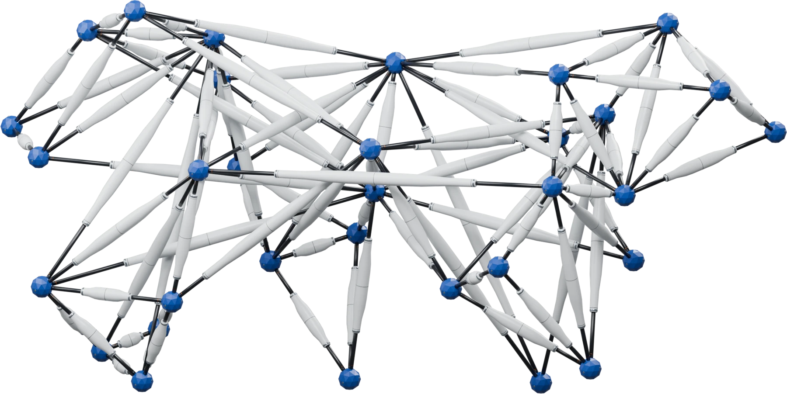

Observe & register
Track image points, review semantic identities, and infer mesh-guided spatial trajectories with bone, temporal, and contact priors.
Video + mesh → O ∈ ℝT × K × 3
Mesh × Motion × Mechanism
Synthesizing Robot Mechanisms
from Mesh and Motion

A mesh describes what an animal looks like. A video describes how it moves. Neither, on its own, tells us how to build a mechanism that can express that motion.
M3VGT connects these two descriptions. It constructs a body from extensible struts, maps semantic motion to its nodes, and uses trajectory compatibility to select a layout and allocate actuator travel.
Original video and recorded MuJoCo execution.
Full source duration; no time warping.
Named body parts connect visual observations,
mechanical design, and bounded strut control.
Track image points, review semantic identities, and infer mesh-guided spatial trajectories with bone, temporal, and contact priors.
Video + mesh → O ∈ ℝT × K × 3
Sample the surface, interior, and skeleton. Build load paths, bind semantic roles, then select a compatible layout and allocate per-strut travel.
Mesh + O → G = (V, E), [ℓmin, ℓmax]
Project node targets into actuator limits. Length PD and task-space feedback produce bounded commands; record the actual trajectories.
Target T → projection P → execution X
Connectedness and rigidity rank are only initial checks. The pipeline also audits load-bearing deformation, semantic load paths, actuator travel, mesh corridors, assembly clearance, and simulated execution. A full-rank graph can still be compliant under its own weight.
The paired results below isolate layout selection and stroke adaptation at a fixed 32-node / 90-strut budget.
Same input. Same component budget.
Same controller. Three design conditions.
Static shape selects the body.
Common fixed-stroke rule.
Keep S geometry and connectivity.
Adapt only actuator strokes.
Select a layout using motion.
Same stroke adaptation as F.
With the body fixed, F improves on S across all three inputs and all three cat pools.
Horse execution / target RMSE improves from 86.84 to 83.20 mm. The dog's sole eligible body makes F and M identical. Cat results vary across pools.
| Design | Shape F1 ↑ | Projection / target ↓RMSE (mm) | Execution / target ↓RMSE (mm) | Execution / source ↓RMSE (mm) |
|---|
Source O is the inferred animal motion; target T is retargeted to the mechanism; P is its actuator-limit projection; X is the actual execution. No per-frame realignment. Lower errors are better.